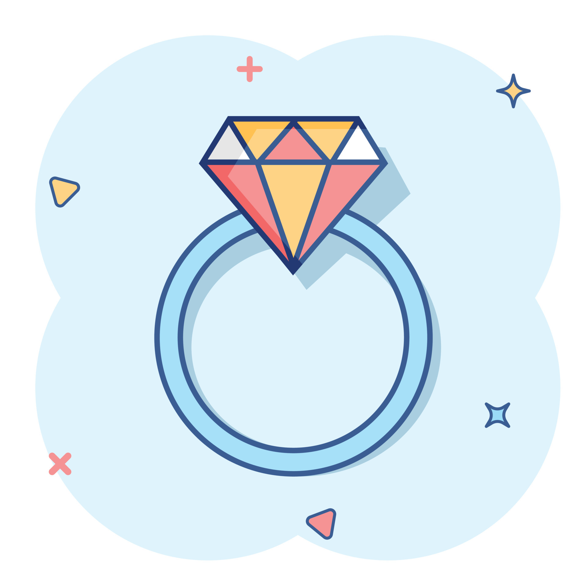

My Music Obsession
It's safe to say that music has become more of an obsession for me at this point. You would often find me drumming in the air to some of my favourite tunes. I would randomly hum songs and watch different YouTube videos on how to play those songs on the piano. Oh! Now would be a great time to mention that I do indeed play the piano. I bet you would never have guessed it! Jokes aside, I really enjoy learning new concepts on the keyboard. There is something so refreshing about playing a beautiful tune on such a prestigious instrument.
I hope that one day I will be great enough to play for a concert. Currently, I just play at my church, but I certainly do no plan for that to be the end of journey. Just like coding, I want my skills in music to transcend beyond just good. I want to be remembered for creating music that swayed the masses. I have rambled enough on this blog post, but I hope you understand just what music means to me. Thank you for reading, Dr. Lyn Fatt. Hope you enjoyed!
A Big Step?
Okay. Dr. Lyn Fatt, between you and I, I plan to get engaged soon to my girlfriend of two plus years. She is such a beautiful soul, and I really enjoy her presence. She is also a computer scientist like me. We met just before we both decided to attend UWI, and within the first month of entering the school we got into a relationship.
It is really hard to put into words what she means to me. Everytime I try to tell someone about it, I feel like it does not do her justice. She is really a perfect person, and based on my very tailored questions she seems super pumped to get engaged and married soon, although, I keep playing it off by saying things like "I don't know I need to reach a savings goal first (I work btw)" or maybe even saying that I need to wait until after her surgery is completed before I even think about that. Oh yes, currently, she is away from me in the States after doing a corrective surgery on her legs which should enable her to walk again without any pain. I hope that after visiting her in the hospital this Christmas we can come home together. Then, after this term is over I will pop the question. Wish me luck.